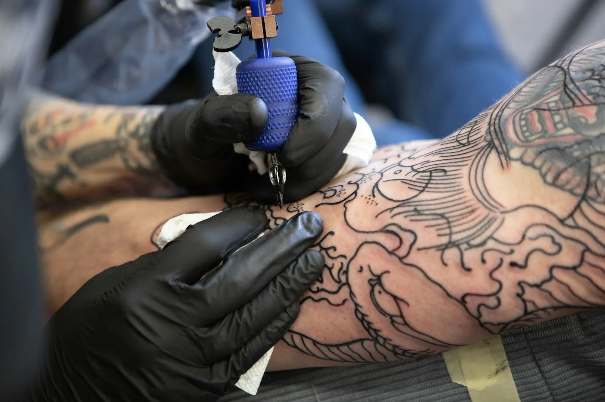

Voor mijn eerste kleine tattoo. Super vriendelijk, goede uitleg en hij stelt je op je gemak. Mooi en proper gezet, exact zoals ik het wou.
Stijlen
Van een datum op je pols tot een volle sleeve.
Garcia Ink zet alle stijlen. Portretten en realisme zijn waar de studio om bekend staat, maar ook een kleine eerste tattoo krijgt dezelfde aandacht.

